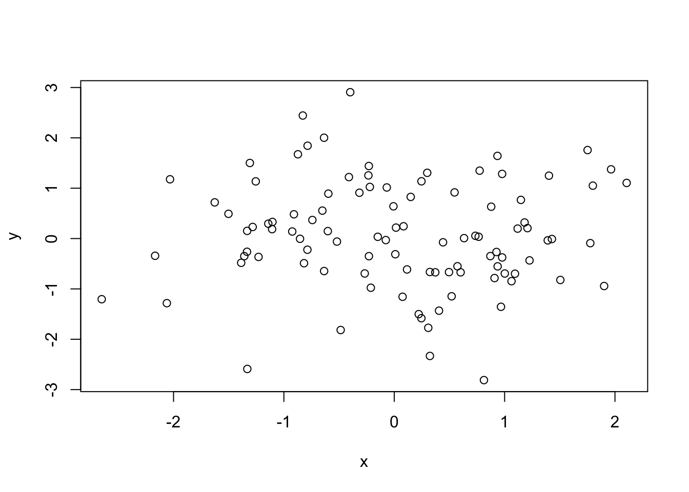
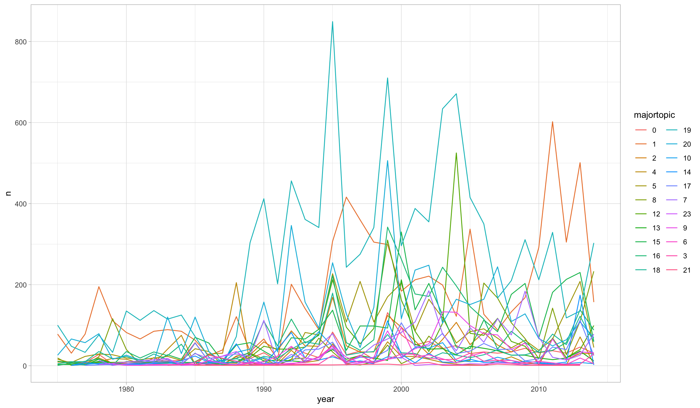

x <- rnorm(100)
mean(x)[1] -0.01664724Your Name
This is an example of an Rmarkdown document. Rmarkdown is a powerful tool for combining code, text, and visualizations in a single document. It allows you to create documents that are reproducible, dynamic, and interactive.
It is super versatile, and a lot of formatting and styling options can be specified using the YAML header (the section at the very top of this document).
R Markdown documents are made up of code chunks and markdown text. Code chunks are blocks of R code that can be executed and their output can be included in the document. Here is an example of a code chunk:
The {r} at the beginning of the code chunk indicates that this is an R code chunk. When you run the code, the output will be included in the document. In this case, the output would be the mean of 100 random normal variables.
You can run all code within a chunk by clicking on the small green arrow pointing to the right at the top of a code chunk (“run current chunk”).
You can also run all code above a chunk by clicking on the downward arrow (“Run all chunks above”). This is excellent for resuming work when reopening a project, and for checking for reproducibility of your results (make sure to restart R before doing so).
In addition to code chunks, you can also include plain text in an R Markdown document using markdown syntax. Markdown is a simple formatting syntax that allows you to add emphasis, headings, lists, and other formatting to your text.
For example, you can create a heading using a # symbol:
# Heading 1
## Heading 2
### Heading 3
In the knitted document, this converts to:
You can also create a bullet list using -:
R Markdown allows you to include plots and visualizations in your document. Here is an example of a plot generated using R:

R markdown is great for working with data related projects, as it allows you to work efficiently and keep your code organized almost automatically. Plus, you get a report of your analysis (the “knitted” version of your markdown file) for free.
Here’s an example of how to work with the EU data
First, we specify a few default knitr options, using the knitr::opts_chunk$set() function. “knitr” is the package that deals with the knitting of rmarkdown documents to the specified format (e.g., html, pdf, word, …). You will not need to deal with it much, but understanding a few concepts will help you produce prettier documents, and allow you to make better use of its customization potentials.
# the following code will set default settings for how code chunks should be knitted
knitr::opts_chunk$set(
echo = TRUE, # code chunks will appear in the knitted document
message = FALSE, # messages from code you run will not appear in the knitted document
warning = FALSE, # warnings from code you run will not appear in the knitted document
fig.width = 12, # figures will have a default width of 12 inches
fig.height = 7, # figures will have a default height of 7 inches
cache = TRUE # code chunks will be cached when they are run. This allows speedier re-knitting of documents
)Then, we load the necessary packages. It is good practice to load all packages you need for your analysis / project at the start of the script, so others can see whether they need to install something before they can run the full script.
Here, we load the raw data from URL.
Here, we do some preprocessing of the data. For instance, we might get rid of a bunch of colums in the raw dataset that we do not need
Here, we give an overview of the data in the cleaned dataset. We’re using the skimr package, which does this automatically for you.
| Name | cleaned_dat |
| Number of rows | 48321 |
| Number of columns | 15 |
| _______________________ | |
| Column type frequency: | |
| character | 3 |
| numeric | 12 |
| ________________________ | |
| Group variables | None |
Variable type: character
| skim_variable | n_missing | complete_rate | min | max | empty | n_unique | whitespace |
|---|---|---|---|---|---|---|---|
| description | 0 | 1 | 3 | 1005 | 0 | 46536 | 0 |
| date | 0 | 1 | 6 | 10 | 0 | 149 | 0 |
| ecprc | 0 | 1 | 2 | 2 | 0 | 78 | 0 |
Variable type: numeric
| skim_variable | n_missing | complete_rate | mean | sd | p0 | p25 | p50 | p75 | p100 | hist |
|---|---|---|---|---|---|---|---|---|---|---|
| id | 0 | 1 | 24161.00 | 13949.22 | 1 | 12081 | 24161 | 36241 | 48321 | ▇▇▇▇▇ |
| year | 0 | 1 | 1999.59 | 9.08 | 1975 | 1994 | 2000 | 2006 | 2014 | ▁▂▆▇▆ |
| majortopic | 0 | 1 | 11.79 | 7.21 | 0 | 5 | 15 | 19 | 23 | ▆▅▂▅▇ |
| subtopic | 0 | 1 | 1185.60 | 722.93 | 0 | 500 | 1500 | 1900 | 2311 | ▆▅▂▅▇ |
| majortopic_eu | 0 | 1 | 1188.64 | 726.38 | 0 | 500 | 1500 | 1900 | 2399 | ▅▃▂▇▃ |
| subtopic_eu | 0 | 1 | 11.78 | 7.22 | 0 | 5 | 15 | 19 | 23 | ▆▅▂▅▇ |
| place | 0 | 1 | 16.57 | 12.40 | 1 | 8 | 8 | 26 | 49 | ▇▂▂▂▂ |
| ecprs | 0 | 1 | 16.12 | 7.54 | 3 | 11 | 15 | 23 | 29 | ▅▇▆▅▆ |
| id_quasisentence | 0 | 1 | 307.09 | 325.85 | 1 | 89 | 213 | 410 | 2259 | ▇▂▁▁▁ |
| filer_meetinfor | 0 | 1 | 0.01 | 0.11 | 0 | 0 | 0 | 0 | 1 | ▇▁▁▁▁ |
| filer_meetextr | 0 | 1 | 0.02 | 0.14 | 0 | 0 | 0 | 0 | 1 | ▇▁▁▁▁ |
| filer_meetcoun | 0 | 1 | 0.00 | 0.03 | 0 | 0 | 0 | 0 | 1 | ▇▁▁▁▁ |
Here, we could start with our analysis.
For instance, we could show some kind of plot. The following plot shows the count of major topics in the EU_CAP dataset by year.
growth_data <- cleaned_dat |>
# group dataset by year
group_by(year) |>
# count the number a major topic occurs per year
count(majortopic) |>
# make "majortopic" a factor variable to help with plotting
mutate(majortopic = as.factor(majortopic))
growth_data |>
# plot the data using ggplot
ggplot(aes(year, n, colour = majortopic)) +
geom_line() +
theme_light()
Then, we could test some kind of model. Maybe how much a given topic has grown over the years (this is of course not how you would model this, but just for illustration):
Call:
lm(formula = n ~ year + majortopic, data = growth_data)
Residuals:
Min 1Q Median 3Q Max
-243.34 -31.12 -6.31 17.87 586.17
Coefficients:
Estimate Std. Error t value Pr(>|t|)
(Intercept) -4577.4851 455.0042 -10.060 < 2e-16 ***
year 2.3110 0.2281 10.133 < 2e-16 ***
majortopic1 144.0000 15.7081 9.167 < 2e-16 ***
majortopic2 8.7037 15.8085 0.551 0.58209
majortopic4 -7.1394 15.9140 -0.449 0.65383
majortopic5 38.3500 15.7081 2.441 0.01486 *
majortopic8 11.4724 15.9138 0.721 0.47119
majortopic12 39.4322 16.2646 2.424 0.01557 *
majortopic13 -7.9887 15.8085 -0.505 0.61347
majortopic15 51.6929 15.8088 3.270 0.00112 **
majortopic16 51.8017 15.9142 3.255 0.00118 **
majortopic18 3.4985 15.8085 0.221 0.82491
majortopic19 229.9000 15.7081 14.636 < 2e-16 ***
majortopic20 82.4000 15.7081 5.246 2.03e-07 ***
majortopic10 -20.3263 16.3966 -1.240 0.21548
majortopic14 -14.1705 16.1415 -0.878 0.38028
majortopic17 -4.7760 16.1427 -0.296 0.76742
majortopic7 15.1462 16.3973 0.924 0.35594
majortopic23 -30.0385 18.1521 -1.655 0.09838 .
majortopic9 -2.0704 16.6807 -0.124 0.90125
majortopic6 -25.4496 16.6787 -1.526 0.12746
majortopic3 -28.3428 17.3322 -1.635 0.10241
majortopic21 -43.2123 21.8571 -1.977 0.04840 *
---
Signif. codes: 0 '***' 0.001 '**' 0.01 '*' 0.05 '.' 0.1 ' ' 1
Residual standard error: 70.25 on 752 degrees of freedom
Multiple R-squared: 0.4802, Adjusted R-squared: 0.465
F-statistic: 31.57 on 22 and 752 DF, p-value: < 2.2e-16I recommend the sjPlot::tab_model() function for outputting nicely formatted regression tables:
| n | |||
| Predictors | Estimates | CI | p |
| (Intercept) | -4577.49 | -5470.71 – -3684.26 | <0.001 |
| year | 2.31 | 1.86 – 2.76 | <0.001 |
| majortopic [1] | 144.00 | 113.16 – 174.84 | <0.001 |
| majortopic [2] | 8.70 | -22.33 – 39.74 | 0.582 |
| majortopic [4] | -7.14 | -38.38 – 24.10 | 0.654 |
| majortopic [5] | 38.35 | 7.51 – 69.19 | 0.015 |
| majortopic [8] | 11.47 | -19.77 – 42.71 | 0.471 |
| majortopic [12] | 39.43 | 7.50 – 71.36 | 0.016 |
| majortopic [13] | -7.99 | -39.02 – 23.05 | 0.613 |
| majortopic [15] | 51.69 | 20.66 – 82.73 | 0.001 |
| majortopic [16] | 51.80 | 20.56 – 83.04 | 0.001 |
| majortopic [18] | 3.50 | -27.54 – 34.53 | 0.825 |
| majortopic [19] | 229.90 | 199.06 – 260.74 | <0.001 |
| majortopic [20] | 82.40 | 51.56 – 113.24 | <0.001 |
| majortopic [10] | -20.33 | -52.51 – 11.86 | 0.215 |
| majortopic [14] | -14.17 | -45.86 – 17.52 | 0.380 |
| majortopic [17] | -4.78 | -36.47 – 26.91 | 0.767 |
| majortopic [7] | 15.15 | -17.04 – 47.34 | 0.356 |
| majortopic [23] | -30.04 | -65.67 – 5.60 | 0.098 |
| majortopic [9] | -2.07 | -34.82 – 30.68 | 0.901 |
| majortopic [6] | -25.45 | -58.19 – 7.29 | 0.127 |
| majortopic [3] | -28.34 | -62.37 – 5.68 | 0.102 |
| majortopic [21] | -43.21 | -86.12 – -0.30 | 0.048 |
| Observations | 775 | ||
| R2 / R2 adjusted | 0.480 / 0.465 | ||
There’s a ton of stuff to learn with rmarkdown. Get inspiration here: https://rmarkdown.rstudio.com/index.html
Here’s the YAML header options I like to specify for my projects (see also above):
title: "Heading of your document"
author: "Your Name"
date: "Date"
output:
html_document:
toc: true
toc_float:
collapsed: true
toc_depth: 4
theme: flatly
code_folding: hide
number_sections: true
df_print: paged
editor_options:
chunk_output_type: consoleIn addition, I like to add in this special html block for styling (view rmd document to see this chunk):
Working with tabulated content. You can do so by adding {.tabset} to your heading.
Every subheading on that level will now be in a tab, like so:
Some content for tab 1
Different content for tab 2
Yet other content content for tab 3
Neat, right?